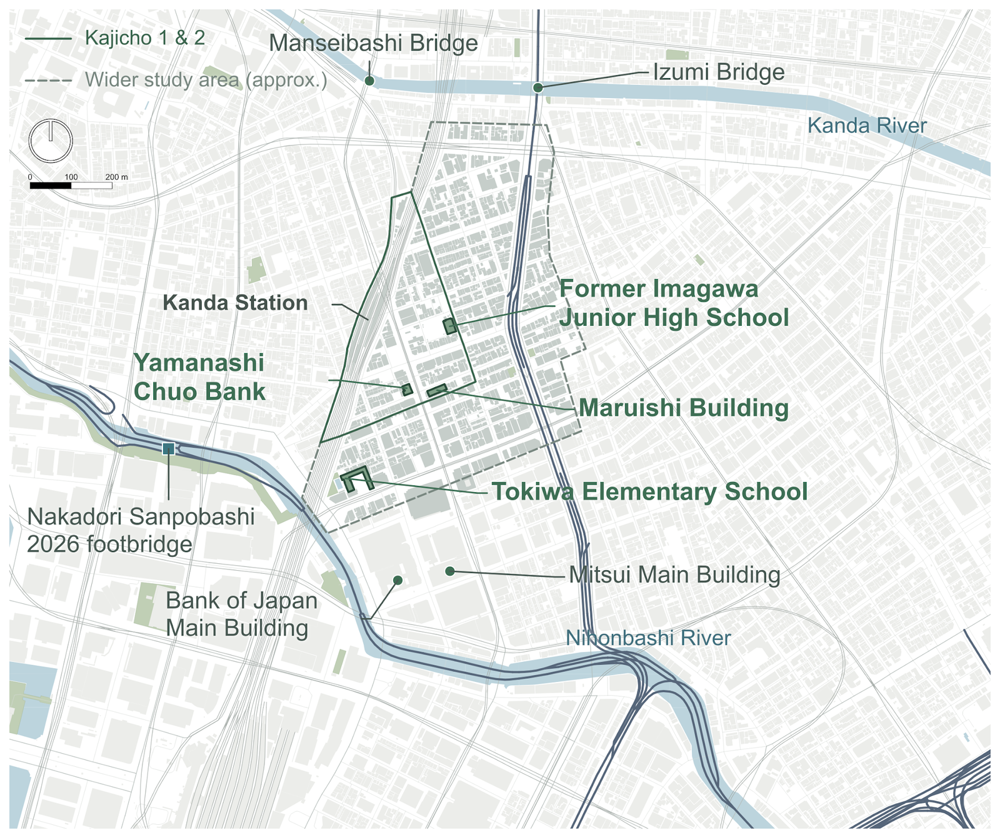

Development and heritage
Two maps, one extent. Trace planned development and the expressway corridor, then see how heritage and public assets fit into the same streets.



Maps by Team B. Basemaps use GSI, MLIT PLATEAU and © OpenStreetMap contributors. Development status reflects the interim review.
Sources and data
Each map lists its source and data year.